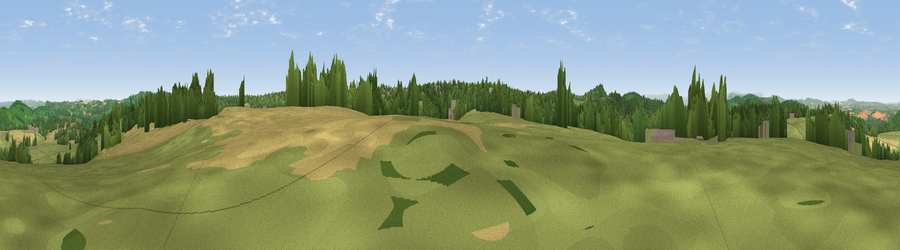

Viewpoint near Christchurch
#14124 in England · top 30% of its area beats it · near ChristchurchThe view, rendered

A 360° render of this exact spot computed from the terrain model, tree cover and land cover — summer colours, afternoon light, calibrated against photographs of famous viewpoints. Real trees, hedges and buildings will differ in detail.
The panorama
Grey silhouette: terrain skyline in each direction (720 bearings, Earth curvature and refraction included). Dashed green: skyline with trees (+15 m) and buildings (+8 m) as obstacles. Blue strip: how far the ground is visible on each bearing.
Where the view opens
Wedge length = distance to the farthest visible ground on that bearing (vegetation-aware). Rings at 10, 25 and 50 km.
What fills the view
42% woodland · 38% grassland · 17% cropland · 2% built-up
Angular shares of the visible panorama (visual magnitude), not map area. Landscape diversity 0.48 (0–1 Shannon).
Key numbers
More beautiful places nearby
The staircase of upgrades: each row has a higher view potential than everything closer. Driving times are estimates from straight-line distance, calibrated against real road routing — check an actual route before setting out.
| Place | Direction | Drive | Score |
|---|---|---|---|
| Viewpoint near Staunton | SW · 3 km | ~7 min | 58.9 |
| Viewpoint near Upper Lydbrook | ENE · 3 km | ~7 min | 67.2 |
| Buck Stone | WSW · 4 km | ~8 min | 71.0 |
| Viewpoint near Goodrich | N · 4 km | ~10 min | 74.0 |
| Viewpoint near Ruardean | ENE · 6 km | ~13 min | 74.2 |
| Chase Wood Hill | NNE · 9 km | ~18 min | 77.6 |
| Viewpoint near Orcop Hill | NNW · 17 km | ~30 min | 79.9 |
| Garway Hill | NW · 17 km | ~30 min | 84.6 |
51.82275, -2.62202 · source: screening · position refined by local search. Computed location — check access rights before visiting.